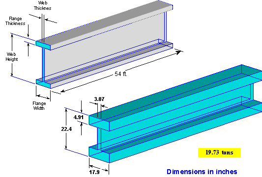

|
|
|
|
|
|
|
|||||||||||||||||||||||||||||||||||||||||||||||||||||||||||||||||||||||||||||||||||||||||||||||||||||||||||||||
|
-- Click on figures to enlarge. --
|
|
|
top
| Comment 1 Issue: Listing of Contributors Location: page 8-10 of 115 of pdf, (labeled page vi-viii of report) http://wtc.nist.gov/media/NIST_NCSTAR_1A_for_public_comment.pdf
Reason for Comment: The listings are inconsistent with individuals being listed as paid contractors and cooperating organizations. This should be clarified. Mary Guida is listed twice (GSA is listed twice).
Suggestion for Revision: Delete or modify as necessary. |
| Comment 2 Issue: Reference to weather Location: Beginning of Section 2.1 pg. 51, paragraph 1,. page 51 of 115 of pdf (labeled page 13 of report), http://wtc.nist.gov/media/NIST_NCSTAR_1A_for_public_comment.pdf
Reason for Comment: The reference is casual and is based on commonly held assumptions, but is not sufficient for a comprehensive and detailed report. Because of the magnitude of the destruction that NIST itself describes as "disproportionate" it is necessary to have a proper understanding of the precise weather mechanism that may have impacted upon the unprecedented destructive events that occurred. Suggestion for Revision: It is not commonly known or appreciated that a massive Category 3 hurricane was located offshore New York on 9/11/01. That was Hurricane Erin, as seen here:
Hurricane Erin on 9/11/01
NHC Data (9/9/01 - 9/12/01)
|


top
| Comment 3 Issue: Analysis of the buckling is substantially incomplete. Location: page 34 of 115 of pdf, (labeled page xxxii of report), paragraph 2 http://wtc.nist.gov/media/NIST_NCSTAR_1A_for_public_comment.pdf
Reason for Comment: Analysis explaining exactly how an interior progressive collapse and complete unit global collapse occurred. The likelihood of asymmetry converting to symmetry is highly unlikely and without detailed engineering descriptions, borders on incredible.
Suggestion for Revision: Crucial to the viability of the probable collapse sequence articulated in this report is that the [dimensions] column would have had to become unsupported over nine stories. We also note that we relied on the soundtracks of available video to refute hypothetical blast events as a causal factor. We did not engage in an analysis of the soundtracks to determine whether the audible sounds could be deemed to be consistent with a [dimension] column becoming unsupported. We have no explanation for why we did not engage in that analysis. |
top
| Comment 4 Issue: Failure due to thermal expansion in buildings does not happen at low temperatures. To suggest this disregards the known properties of materials. Location: First use at Pg. 34 (pdf) Executive Summary, plus, comment pertains to all 37 uses of that term throughout NCSTAR 1-A, paragraph 3
Reason for Comment: The term "thermal expansion" does not appear to have any clearly articulated scientific basis in reality; nor does NCSTAR 1-A adequately explain how the concept of thermal expansion, as articulated, could have arisen in connection with steel columns, girders, and beams that were fire proofed.
NIST's use of a thermal expansion, occurring at "low temperature" is insufficiently elaborated. Clearly, NIST is trying to navigate a very narrow factor of plausibility here, and that is the most that can be said about it. On the one hand, thermal expansion might, in very generous theoretical terms be said to result in certain effects. However, if the temperature is too high, then a softening of material occurs, which would negate the necessary strength needed to cause expansion. Accordingly, absent a detailed indication of what temperature is low enough to cause expansion, while simultaneously not causing loss of strength is crucial. It may well be that there is no such temperature. In any event, NIST must, at a minimum specify what temperature it has reason to believe was achieved and how the conditions known could have resulted in that temperature. We understand, as well, that there are some who will question the validity of the use of this concept and who may claim that NCSTAR 1-A is fraudulent.
Suggestion for Revision: NIST data show that ____ temperature was achieved and documents that following conditions occurred at that temperature [details]. NIST also acknowledges, in this respect that there are some who will question the validity of the use of this concept and who may claim that NCSTAR 1-A is fraudulent. |
top
| Comment 5 Issue: Limiting the analysis to properties of the soundtracks to hypothetical blast events is fraudulent Location: page 34 of 115 of pdf, (labeled page xxxii of report), paragraph 5 http://wtc.nist.gov/media/NIST_NCSTAR_1A_for_public_comment.pdf
Reason for Comment: NIST's acknowledgment that the soundtracks from available videos were used in connection with the analysis of hypothetical blast events requires, for sake of consistency of analysis, that such soundtracks also be used to substantiate (or refute) the findings that NIST made in connection with its other findings. The failure to do so is consistent with fraud. Suggestion for Revision: We understand, as well, that there are some who will question the validity of limiting our analysis of the properties of the soundtracks to hypothetical blast events. We have no explanation for doing so and if there are those who wish to assert that our failure in this respect is fraudulent, then they may do so. We acknowledge being placed on notice of this claim of fraud in comments received from Dr. Judy Wood. |
top
| Comment 6 Issue: Building structure as given in the document(s) is incomplete – therefore the analysis is incomplete. Location: page 43 of 115 of pdf, (labeled page 5 of report), 2nd paragraph from bottom http://wtc.nist.gov/media/NIST_NCSTAR_1A_for_public_comment.pdf
Reason for Comment: Use of generic, non-specific language – "three interior columns (79, 80, and 81) were particularly large" is unsatisfactory for a report that must comply with the standards of the Information Quality Act. The dimensions of those columns must be specific. Full drawings and material specifications related to the building must be available in the report.
Suggestion for Revision:
The three interior columns (79, 80, and 81) were of the following dimensions: [provide length, width, breadth and weight]. NIST could not confirm via the available soundtracks that columns of that dimension could be heard crashing down.
[Or, in the alternative]
NIST correlated the sound of crashing of columns in the soundtracks for videos taken at sites __, ___.
|
top
| Comment 7 Issue: Dimensions and weights of beams must be provided. Location: page 44 of 115 of pdf, (labeled page 6 of report), paragraph 1 http://wtc.nist.gov/media/NIST_NCSTAR_1A_for_public_comment.pdf
Reason for Comment: Building structure as given in the document(s) is incomplete – therefore the analysis is incomplete. Location of beams alone is insufficient to make a valid assessment. Much more structural information needs to be included, with more specific details of dimensions, weights and materials involved for anything which fell to the ground.
Suggestion for Revision: NIST has determined that the dimensions of the beams referenced here are as follows: [provide dimensions]
|
top
| Comment 8 Issue: Aspect ratio of beams Location: Page 346 of 382 of pdf (labeled page 684 of report), page 127 of 382 of pdf (labeled page 465 of report), http://wtc.nist.gov/media/NIST_NCSTAR_1-9_vol2_for_public_comment.pdf

Reason for Comment: The aspect ratio of beam cross sections shown in the report do not have dimensions. The dimensions provided in the report describe beams with a very different aspect ratio. Dimensions and weights of beams used in this analysis must be provided so that the plausibility of NIST's theory can be properly assessed, among other things. Basically, we are led to believe that very large columns, beams and girders were all sufficiently heated by ordinary office fires that burned for no more than 20 minutes in any one area resulted in multiple, nearly simultaneous failure. That explanation is, of course, implausible, but, at a very minimum, accurate dimensions of what failed must be both provided in detail and properly diagrammed.
Because NCSTAR 1-A refers to collapsing beams, it is essential that the correct aspect ratio is depicted. Otherwise, a highly misleading report would be foisted on the public. We are already required to accept that a 47-story building could collapse in a matter of seconds. At a minimum, correct diagrams of what is said to have collapsed are required. If not, then the appearance of fraud is overwhelmingly confirmed. Suggestion for Revision: This revision requires re-do of diagrams as exemplified above to show correct aspect ratios. |
|||||||||||||||||||||||||||||
top
| Comment 9 Issue: Causes for the destruction other than fire and thermal expansion must be properly considered, using all available data. Location: page 47-8 of 115 of pdf, (labeled page 9-10 of report) http://wtc.nist.gov/media/NIST_NCSTAR_1A_for_public_comment.pdf
Reason for Comment: If it was the case that: "Simulations of the fires with a higher combusted fuel load (NIST NCSTAR 1-9, Chapter 9) resulted in poor agreement with the observed fire spread rates" this means the analysis is incomplete or incorrect. Full detailed resulting data from testing of combustible fuel load should be included in the report. If data from these repeatable tests does not match up well with observed fire spread rates, then further testing is necessary.
Suggestion for Revision: Data: [Fully described, repeatable tests of combustibles within the building should be available which describe temperatures achieved (compared with materials fully documented in architectural documentation) as well as fire spread rates. These must be compared to expected heating and material failure specs of the actual materials in the building according to official architectural documents.] |
top
| Comment 10 Issue: Analysis for the fate of the fuel is incomplete. Location: page 49 of 115 of pdf, (labeled page 11 of report), http://wtc.nist.gov/media/NIST_NCSTAR_1A_for_public_comment.pdf
Reason for Comment: Incomplete audit of fuel from internal WTC7 fuel tanks and how it did or did not contribute to heating of the materials within the building prior to global symmetric collapse.
Suggestion for Revision: DATA: [Provide audit of fuel available in the tanks pre-9/11 with fuel accounted for during cleanup.] |
top
| Comment 11 Issue: Incomplete analysis of what was heard. Location: page 51 of 115 of pdf, (labeled page 13 of report), http://wtc.nist.gov/media/NIST_NCSTAR_1A_for_public_comment.pdf
Reason for Comment: Use of language is not specific enough "People throughout the building…" The description of the sound is also vague. Determine and include how many people heard the "boom". The description of the sound needs to be clearer – did it sound more like a crash, or an explosion? All subjective comments must be supported by actual statements that will verify what exactly individuals heard and how they corroborate to each other. Statistical analyses should be conducted of witness statements to ensure consistency of said statements to insure that readers of this report only hear objective data. This could then be compared with public domain analyses of eyewitness statements to ensure consistency.
Suggestion for Revision: NIST has determined with reasonable certainty the assertions concerning what was heard based on the following accounts and soundtracks [provide data] |
top
| Comment 12 Issue: It would be like raining dump trucks. Location: page 58 of 115 of pdf, (labeled page 20 of report), http://wtc.nist.gov/media/NIST_NCSTAR_1A_for_public_comment.pdf
Reason for Comment: Analysis of columns 79, 80, 81, is incomplete. Much more structural information needs to be included, with more specific details of dimensions, weights and materials involved. Comprehensive re-analysis of the sound of the destruction is required – and considered in the light of the seismic readings. I.e. there was a great volume of heavy material coming down to the ground, which would have made very loud noise, but this was not observed. This must be addressed. This section describes the gravitational failure of several columns during the initiation of internal progressive collapse without including sound analysis of falling debris based on architectural documentation and material specs. Analysis of the audible recordings and sound properties of materials specified in the building should be included in the report to understand comparisons with similar weight objects as they are affected by gravity and collide with materials below. Suggestion for Revision: NIST realizes that the sound properties associated with the progressive collapse hypothesized in this report would have been quite pronounced. Detailed confirmation of the sound can be found in [provide data] [Or, in the alternative] NIST has not been able to find any soundtrack containing crashing sounds that would corroborate the theory of collapse articulated in this report. However, NIST still maintains its belief in the plausibility of its explanation even though no audible confirmation could be found.
|
top
| Comment 13 Issue: No mention of fire, heat or smoke on floors 4,5,6 casts doubt on NIST's analysis of fire immediately above those floors. Location: page 64 of 115 of pdf, (labeled page 26 of report) http://wtc.nist.gov/media/NIST_NCSTAR_1A_for_public_comment.pdf
Reason for Comment: No mention of fire, heat or smoke on floors 4,5,6 casts doubt on NIST's analysis of fire immediately above those floors. Careful consideration of actual damage to floors 4, 5 and 6 needs to be made. Their structure (and those of other floors) cannot have been completely destroyed by "thermal expansion" and "collapse" of the upper floors. Documentation of eyewitnesses indicates little or no damage on various indicated floors, including fire, heat or smoke. A more realistic analysis of the destruction of all floors not affected by fire needs to be included. Suggestion for Revision: NIST recognizes that the hypothesis of the effect of fires on floors above 6 is inconsistent with what was seen to have occurred on floors 4,5 and 6. We assert that the following specific evidence was used to account for that difference [provide data] [Or, in the alternative] NIST recognizes that the hypothesis of the effect of fires on floors above 6 is inconsistent with what was seen to have occurred on floors 4,5 and 6. NIST has no data to account for the difference, but nonetheless maintains that it can make the claims made for fires above floor 6. |
top
| Comment 14 Issue: Spontaneous disintegration Location: page 58 of 115 of pdf, (labeled page 20 of report), http://wtc.nist.gov/media/NIST_NCSTAR_1A_for_public_comment.pdf
Reason for Comment: Unless the building structure spontaneously disintegrated, when horizontal beams are removed from one side of a column, there should still be beams connected to the other side of the column. So, the column will not be unsupported. With less loading on the columns, they are less likely to fail. If a beam connected to one side had been removed, the beam on the other side is less constrained which would reduce the stress.
Suggestion for Revision: NIST nevertheless acknowledges that unless the building structure spontaneously disintegrated, when horizontal beams are removed from one side of a column, there should still be beams connected to the other side of the column. So, the column will not be unsupported. With less loading on the columns, they are less likely to fail. If a beam connected to one side had been removed, the beam on the other side is less constrained which would reduce the stress. |
top
| Comment 15 Issue: Failure to include magnetometer and failure to properly use seismic data Location: page 315 of 382 of pdf, (labeled page 653 of report), http://wtc.nist.gov/media/NIST_NCSTAR_1-9_vol2_for_public_comment.pdf
Reason for Comment: Seismic data makes no comparisons to other comparable seismic events such as blasts related to TNT (in tons) relating to building size. Full comparisons of expected seismic activity should be made with other structures based on mass and substructure composition compared with seismic expectations of certain volumes of TNT. Any anomalies should be evaluated and determinations of these variations should be explained. If additional data, such as magnetometer data that corresponds to the onset of the events at the WTC as well as the final failure at WTC7 is available and suggests a correlation, this correlation should be included in the report and analyses conducted and findings documented.
The impact of the debris from WTC7 registered an equivalent to 0.6 on the Richter Scale. This is the magnitude of a signal that might be expected if WTC7 had lost at least 99% of its mass, evenly, over the height of the building. Significant and important magnetometer data exists and must be included. That data consists in the following. [See data below.] Analysis of that data, in conjunction with seismic data results in important information that will cast doubt on the probable collapse scenario in NCSTAR 1-A. We anticipate that NIST may not use this data and that, instead, the failure to do so will have to await further proceedings, such as a Request for Correction. NIST is hereby placed on notice that the failure to include the data is inexcusable. Suggestion for Revision: Magnetometer + seismic + "Our seismic & magnetometer evidence" |


{kind=link}
{kind=link}
top
| Comment 16 Issue: Analysis is incomplete; sound analysis omitted. Location: page 78 of 115 of pdf, (labeled page 40 of report), http://wtc.nist.gov/media/NIST_NCSTAR_1A_for_public_comment.pdf
Reason for Comment: Very subjective descriptions of matched observed behavior with the complex nature of the modeled behavior. Any sound simulations compared to observed data as noted in Comment 5. Analysis incomplete – sound analysis omitted. Precise measurements should be provided from modeling to compare with actual observations. Sound simulation findings and comparisons to expectations and observable data should be included. Re-analysis, including sound, needs to be added.
Suggestion for Revision: NIST has found [insert analysis of soundtrack and other data of audible phenomena]. [It is known that soundtracks show a lack of loud audible booms or crashes, something that makes NIST's probable collapse sequence highly doubtful.] |
top
| Comment 17 Issue: 242-foot drop?! Location: page 79 of 115 of pdf, (labeled page 41 of report), http://wtc.nist.gov/media/NIST_NCSTAR_1A_for_public_comment.pdf
Reason for Comment: Descent of Roofline by 242 feet should have made a noise. 242 feet of drop noted in evaluation of Camera 3 with no notation of sound-- a very loud noise. Re-analysis, including sound, needs to be added. Analysis of sound as it compares to the visible data in the camera view should be included and compared with expected results.
Suggestion for Revision: NIST has analyzed all available soundtracks and could not find sound consistent with the 242 drop referenced here. [Or, in the alternative] The sound of the 242' drop was confirmed by [insert confirming data] |
top
| Comment 18 Issue: Incongruence in Collapse time calculation. Location: page 79 of 115 of pdf, (labeled page 41 of report), http://wtc.nist.gov/media/NIST_NCSTAR_1A_for_public_comment.pdf
Reason for Comment: NIST arbitrarily limited its collapse time analysis to the 242-foot drop. However, even in doing that, NIST did not correlate its collapse time calculation with either an explanation of what materials dropped [columns, beams, and girders, and their dimensions] and the known audible data and seismic data.
The data presented by NIST in Table B-2 shows a dominant period lasting 0.8 seconds. Collapse time Duration of signal Did the ground shake like raining dump trucks?
NIST does not correlate with the seismic data noted . That data shows a seismic event lasting less than 6.4 seconds.
t = 6.355 seconds, or t = 6.4 s. T = sqrt ((2*h)/g) = sqrt ((2*650)/32.2) = 6.3539 seconds = ~ 6.4 seconds. The collapse time for the building is not addressed. Analysis is incomplete and inconsistent with time the ground shook. Add: the sound heard should have been comparable with a fleet of dump trucks crashing to the ground (one only has to consider the noise and vibration of one that is loaded when it passes by a pedestrian on the sidewalk). In complete and should be addressed.
Suggestion for Revision: The seismic data analysis shows [add analysis] and add conclusions that follow from that data.
|
| Comment 19 Issue: Selective use of audible data. The analysis of sound is incomplete. Location: page 87 of 115 of pdf, (labeled page 49 of report), http://wtc.nist.gov/media/NIST_NCSTAR_1A_for_public_comment.pdf
Reason for Comment: The sound analysis is incomplete. It is stated that the soundtracks from the videos recording the event did not contain any sound as intense as would have accompanied such a blast, yet there is no analysis for what sound levels should accompany the sudden gravity collapse proposed. Sound is used as one of the criteria to eliminate the consideration of a blast event as causing the destruction of WTC7. But the proposed causal theory with a gravity collapse has not been tested by the same criteria.
WTC7 is approximately 200,000 tons. That's equivalent in mass to about 10,000 - 20,000 dump trucks, distributed in space over the height of the building. If those suddenly collapsed to the ground, the sound should be audible, should register seismically and must be included in NIST's analysis. NIST acknowledges that it did not do an analysis of the soundtracks in order to verify its collapse hypothesis and, instead, only used soundtrack analysis to confirm there was no loud sound that would have been expected from a hypothetical blast event. NIST is aware that its work in this respect may be challenged as being fraudulent. Suggestion for Revision: Soundtrack analysis data show [add data] and add conclusions that follow from that data. |
|
Continue to next page.
|
Continue to next page.
|
||||||||||
|
|
|
|
|
|